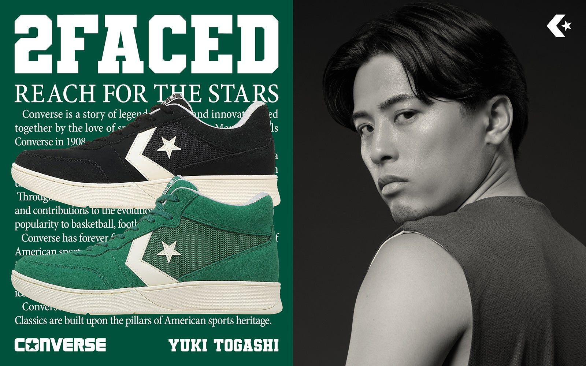

隠れた名作「COURT STAR」が令和に蘇る —— コンバース「2FACED」9月11日先行発売
コンバースジャパン株式会社は8月31日、バスケットボールカテゴリー「CONVERSE BASKETBALL」の新作パフォーマンスモデル「2FACED（2フェイスド）」を発表した。80年代のバスケットボール黄金期に生まれた隠れた名作「COURT STAR」をベースに、現代のフットウェア技術を融合させた一足で、9月11日よりGALLERY・2 渋谷店とKinetics HARAJUKUで先行発売する。

MID・LOW・LE LOWの3モデル展開
ラインナップは、足首まで包み込む「2FACED MID」（16,500円）、可動域を広く確保したローカットの「2FACED LOW」（15,950円）、レザーとメッシュを組み合わせオールブラックで仕上げた限定モデル「2FACED LE LOW」（16,500円、いずれも税込）の3種類。共通して前足部に軽量・高反発素材「KaRVO™プレート」を搭載し、屈曲時にバネのようにしなることで蹴り出しをアシストする。中足部には幅広のシャンクを内蔵してねじれを抑制し、ソール巻き上げ構造とE.V.A.ミッドソールで推進力とクッション性を両立させたという。サイズはいずれも23.0〜29.0、30.0、31.0cm。
渋谷と原宿で先行発売記念イベントも
発売日の9月11日には、両店舗で記念イベントを開催する。GALLERY・2 渋谷店ではフリースタイルバスケットボールクルー「SwagCrew」を迎えたファンイベントを、Kinetics HARAJUKUではショーケースやDJパフォーマンスが融合したスペシャルイベント「CONVERSE 2FACED Night」を実施。いずれの会場も購入者先着100名にオリジナルTシャツを配布するという。
出典: コンバースジャパン株式会社プレスリリース「【CONVERSE】アーカイブ「COURT STAR」を現代の技術でアップデートしたバスケットボールシューズ「2FACED」が登場」（PR TIMES・2026年8月31日）
https://prtimes.jp/main/html/rd/p/000000208.000010657.html